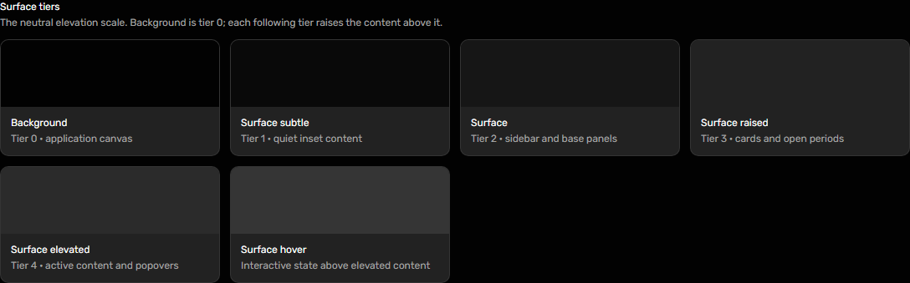
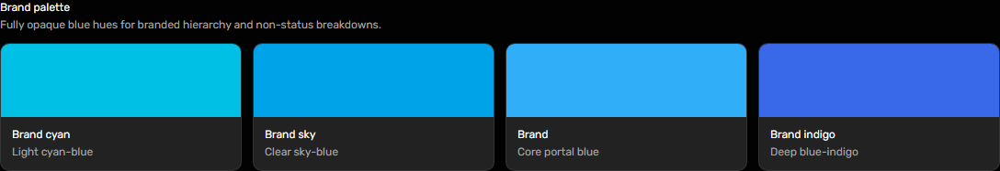
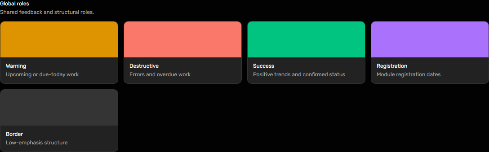
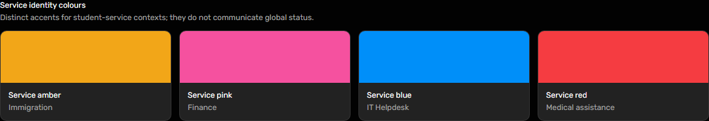
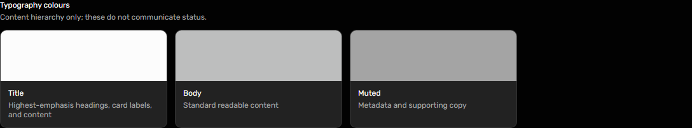
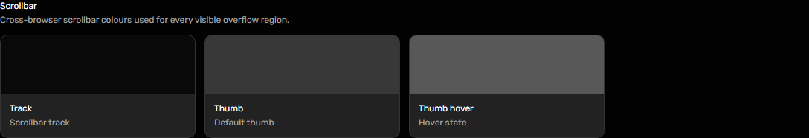
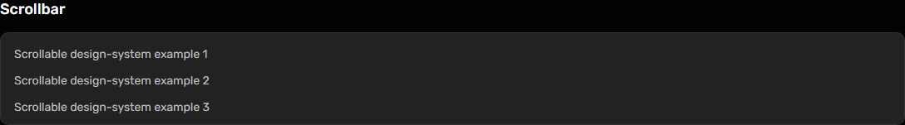
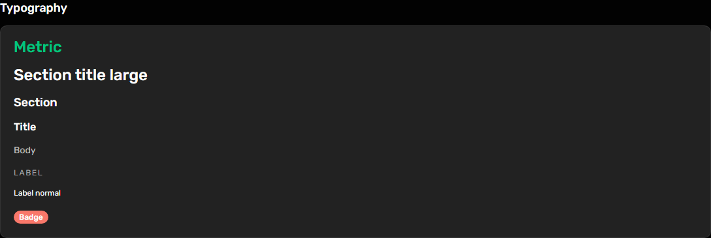

Shared foundation
#Surface tiers
Use the neutral elevation scale; the application canvas is tier zero.

Design system · released package 0.9.1
Tokens, typography, colour roles and scrolling
Static captures use mock portal data. Click a preview to inspect it at full size. Exact props come from the released package declarations or the owning portal source.
Use the neutral elevation scale; the application canvas is tier zero.

Use brand colours for hierarchy, not for success or failure.

Feedback colours carry meaning alongside visible text and icons.

These accents identify named services and are not status colours.

Use semantic title, body and muted text roles.

Keep scrollable areas usable with keyboard, pointer and touch input.


Use the shared type utilities to preserve the portal hierarchy.
